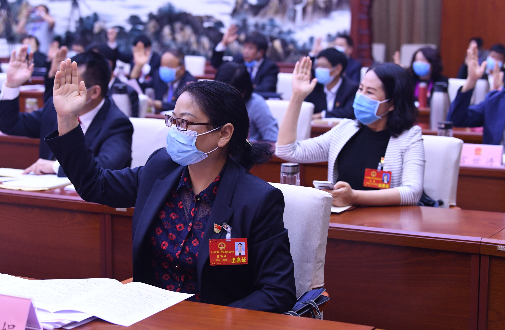
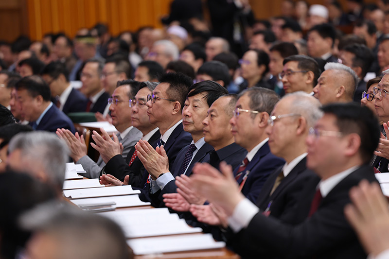
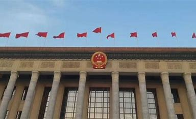
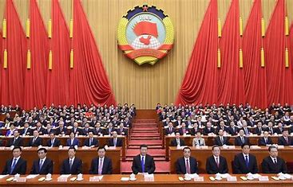
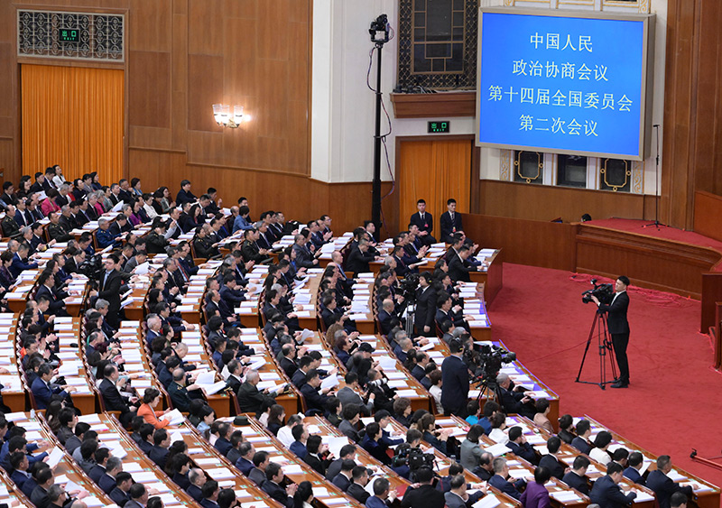
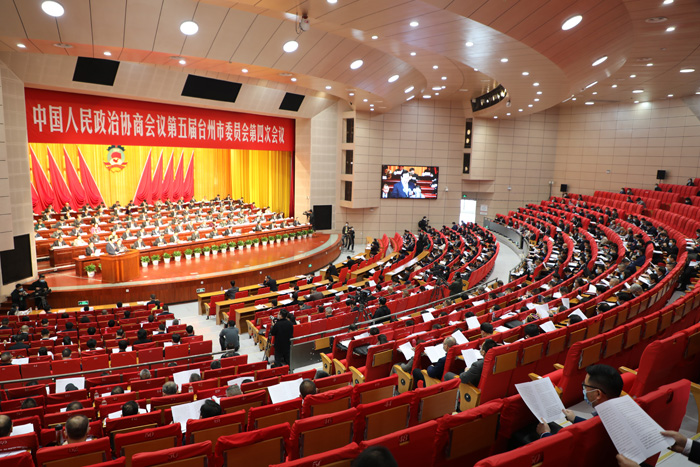

精彩照片

会议表决瞬间
此画面捕捉了代表们举手表决的庄重时刻，体现两会民主决策机制，每一次举手都是人民意志的集中体现，彰显人民当家作主的政治内涵。

庄严会议场地
人民大会堂作为两会主场地，建筑外观庄严肃穆。立柱与国徽设计，既展现建筑美学，更象征国家权力机关的权威性，承载着重要政治活动使命。

飘扬的五星红旗
大会堂前飘扬的五星红旗，是国家象征的生动展现。红旗猎猎，映照两会的庄重氛围，寓意国家发展在正确方向上稳步前进。

两会盛会议程
会议现场全景展现群贤毕至的盛况。代表委员们齐聚一堂，围绕国家发展大计建言献策，体现两会作为政治协商、共谋发展平台的核心作用。

政协参政议政场景
政协会议现场聚焦参政议政环节，各界代表通过提案、讨论等形式，为国家治理贡献智慧，诠释多党合作和政治协商制度的生动实践。

建筑美学与政治寓意
大会堂内部穹顶设计融合美学与政治寓意，红星元素彰显国家属性，灯光布局营造庄重氛围，象征国家发展在光明道路上凝聚力量。